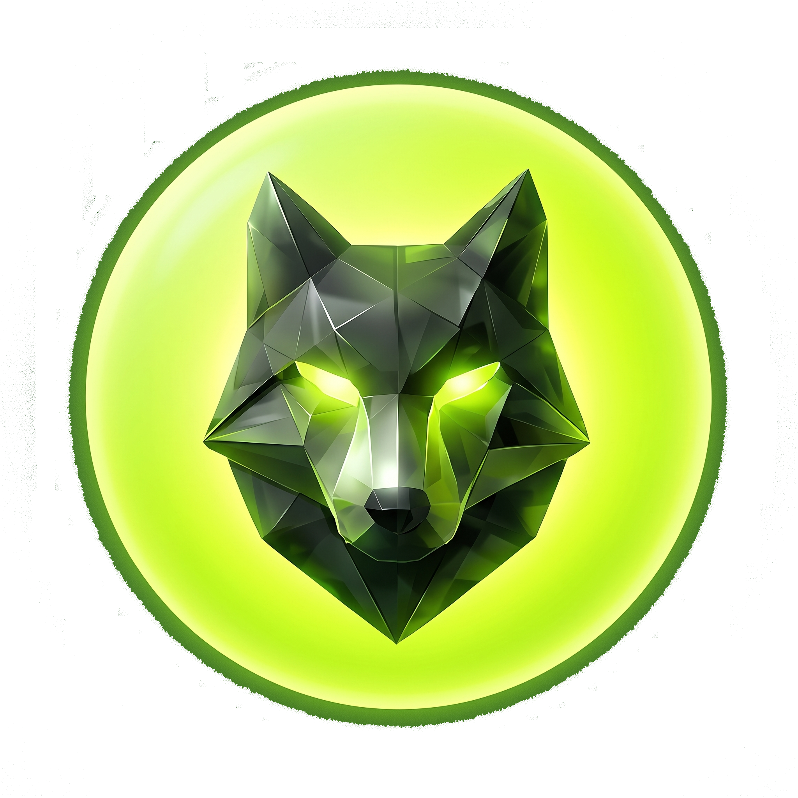

Somos una firma de arquitectura integral de crecimiento para empresas, líderes y proyectos creativos que buscan dejar de operar desde la improvisación.
Manifiesto
Fricción & Núcleo
Ecosistema
3 Vectores + ROI
Ejecución
Matriz 40 Bloques
Evidencia
Antes vs Después
Metodología
Pipeline 4 Fases
Diagnóstico
Test en Tiempo Real
La aceleración real no es aumentar el volumen de ruido, sino eliminar la fricción estructural que frena la conversión.
Cada interacción está interconectada. Eliminamos las fugas de leads y aceleramos el paso de prospecto a cliente de alto valor.
Automatización inteligente omnicanal que conecta WhatsApp, CRM y analítica predictiva en un único flujo continuo.

EN LÍNEA • ASISTENTE ARQUITECTURA